7 Ferramentas e recursos para o processamento sintático
7.1 Introdução
A sintaxe é o nível de análise linguística no qual examinamos os padrões de estruturação de sentenças. Isto é, analisamos como as palavras se organizam em unidades que constroem significado dentro da sentença. Para isso, consideramos a classe de cada palavra, sua ordem na sentença e sua relação com as outras palavras. Conforme visto no Capítulo A ordem e a função das palavras em uma sentença, em PLN, a análise computacional realizada no nível sintático é denominada parsing, a ferramenta que realiza essa tarefa é denominada parser e o recurso criado por meio da análise sintática é chamado treebank.
Neste Capítulo, vamos conhecer tipos de parsing sob a perspectiva computacional, juntamente com ferramentas e recursos disponíveis para o processamento do português brasileiro.
7.2 Tipos de parsing
A tarefa de parsing consiste em, dada uma entrada com uma sentença sem nenhuma anotação (raw), um modelo faz uma predição da estrutura sintática dessa sentença. Como vimos no Capítulo A ordem e a função das palavras em uma sentença, o objetivo do processamento sintático é identificar as unidades (como palavras, sintagmas e orações) na sentença e estabelecer as relações gramaticais entre elas a fim de extrair algum tipo de informação. Essas relações podem ser analisadas em termos de:
- constituência, ou seja, quais unidades são hierarquicamente inferiores às outras e estão nelas contidas; ou
- dependência, isto é, quais palavras dependem de quais outras e qual é o tipo de relação entre elas, incluindo o papel de cada palavra na sentença (como sujeito, objeto, verbo, adjetivo etc.).
Assim, de acordo com o tipo de análise sintática adotada, há parsers de constituência e parsers de dependência.
Mas há uma perspectiva adicional sob a qual podemos caracterizar tipos de parsing e parsers: trata-se do escopo ou profundidade com que a análise sintática é executada. Nesse sentido, podemos analisar as sentenças de forma exaustiva até obtermos uma análise completa de sua estrutura ou fazer uma análise mais rasa para obtermos uma análise com informações mínimas, mas relevantes para as tarefas em PLN.
O primeiro tipo é denominado deep (em português, profundo) ou parsing completo e o segundo tipo é denominado shallow (em português, superficial) ou parsing parcial. Contudo, cabe uma observação sobre esta terminologia. No uso geral, os termos parsing e parser acabaram sendo adotados para se referir ao parsing completo. Já o parsing parcial é conhecido como chunking (em português, cortar) e a ferramenta como chunker, embora chunking seja uma dentre várias abordagens para a implementação do parsing parcial (Jurafsky; Martin, 2023).
Tanto o parsing de constituência como o parsing de dependência podem ser executados de forma completa ou parcial. Tomando como exemplo o parsing de constituência, uma análise completa ou deep extrai todos os agrupamentos e as relações sintáticas em uma sentença. Por exemplo, dada a sentença:
Exemplo 7.1
Emma Watson postou uma foto com Daniel Radcliffe.
Temos na Figura 7.1 uma representação em diagrama de árvore que mostra a profundidade da análise.
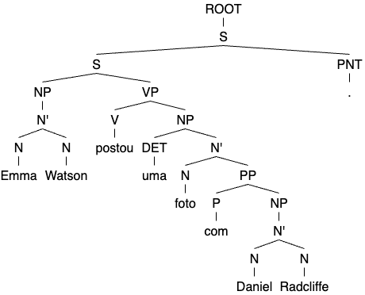
Já uma análise parcial extrai constituintes delimitados, sem estabelecer a hierarquia entre eles ou de que forma uns estão contidos em outros.
A Figura 7.2 ilustra a análise rasa, não hierárquica do parsing parcial para o Exemplo 7.1.
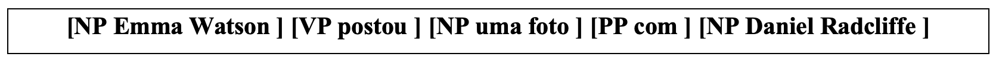
O objetivo do parsing parcial é gerar uma representação rasa da estrutura da sentença que possibilite um processamento mais rápido de grandes volumes de texto. É geralmente implementado por meio de tokenização de uma sentença em palavras, identificação da classe de palavra (PoS) e segmentação em pedaços ou chunks. O conceito de chunk foi proposto por Abney (1992) como uma unidade formada por uma única palavra ou por um conjunto de palavras. Em um chunk, há uma palavra de conteúdo circundada por palavras funcionais. A palavra de conteúdo mais explorada em chunking é o substantivo, dada a alta correlação de substantivos com entidades.
Assim, a tarefa de chunking da sentença do Exemplo 7.1, executada em Python utilizando o modelo de língua portuguesa pt_core_news_sm, da biblioteca spaCy, gera o resultado disposto na Figura 7.3:
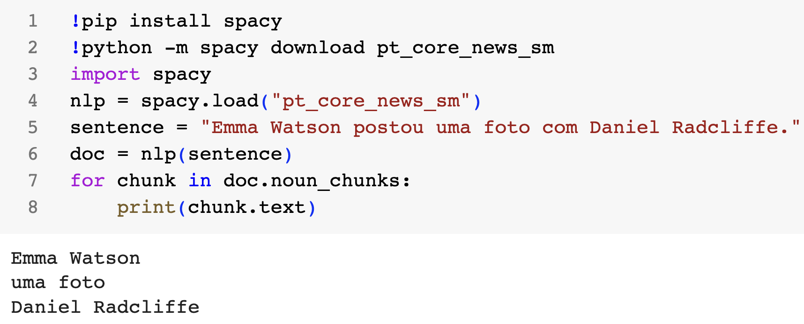
Como vemos na Figura 7.3, o chunking reconhece três unidades ou chunks, cada uma nucleada por um substantivo. Os três chunks são candidatos a entidades, sendo duas delas nomes próprios de pessoas. De fato, como veremos no Capítulo Extração de Informação, vários modelos de Extração de Informação utilizam análises rasas como a fornecida pelo chunking.
7.3 Recursos e ferramentas para o português
Nesta seção, vamos conhecer alguns recursos e ferramentas de PLN para análise sintática do português.
7.3.1 Corpora
O primeiro recurso para o processamento linguístico é um corpus anotado ou treebank, isto é, textos enriquecidos com marcações de classe de palavras (Part-of-Speech) e relações sintáticas. Um exemplo de corpus em português anotado é o Bosque1, amplamente utilizado para treinar modelos de análise sintática (Veja Capítulo Conjunto de dados, dataset e corpus).
O corpus Bosque é parte de um corpus maior, chamado Floresta Sintá(c)tica2, que abrange, além do Bosque, outros subcorpora, nomeadamente: Selva, Amazônia e Floresta Virgem. O grande corpus foi anotado automaticamente pelo parser PALAVRAS (Bick, 2000). O Bosque está integrado por sentenças extraídas dos corpora CETENFolha (português brasileiro) e CETEMPúblico (português europeu), ambos constituídos por textos jornalísticos escritos. Uma versão do Bosque3 foi convertida para o formato UD (Universal Dependencies), apresentado no Capítulo A ordem e a função das palavras em uma sentença, e é hoje um dos treebanks mais utilizados pela comunidade de PLN no Brasil em modelos de parsing de dependência atuais.
Além da Floresta Sintá(c)tica, encontra-se disponível, como recurso para a língua portuguesa, o Corpus Internacional do Português – CINTIL4, desenvolvido pela Universidade de Lisboa, que possui 1 milhão de tokens de texto jornalístico, com anotação de classe de palavra, lema e expressões multipalavra. Uma versão desse corpus, o CINTIL-UDep5, é disponibilizada com anotações no padrão UD.
Mais recentemente, o corpus PetroGold6 foi disponibilizado e, hoje, é um corpus passível de ser utilizado em modelos de parsing de dependência. PetroGold é um corpus de textos acadêmicos no domínio do petróleo, anotado no formato UD e revisado manualmente.
Há diversas iniciativas em andamento, no momento da escrita deste capítulo, para a criação de corpora anotados em português brasileiro. No escopo do projeto NLP2, desenvolvido pelo Centro de Inteligência Artificial7 (C4A1) da Universidade de São Paulo, com o objetivo de desenvolver recursos, ferramentas e aplicações para levar o português ao estado da arte em PLN, o projeto POeTiSA8 desenvolve o treebank Porttinari9, um corpus multi-gênero de textos em português brasiliero anotados de acordo com o padrão UD. Inclui textos jornalísticos do corpus da Folha de São Paulo/Kaggle, o corpus MAC-MORPHO10 de textos jornalísticos, o corpus DANTE11 (Dependency-ANalised corpora of TwEets), integrado por tweets da Bolsa de Valores, B2W-reviews0112, composto por resenhas e avaliações de consumidores da empresa de comércio eletrônico Americanas e um corpus de Resenhas online de livros. A versão Porttinari-base já se encontra disponível13.
Uma iniciativa também em andamento é o corpus Veredas14, desenvolvido na Faculdade de Letras da UFMG, que visa à construção de treebanks de textos anotados de acordo com o padrão das UD. Inclui amostras de uma variedade de textos em inglês, espanhol e português brasileiro: colunas jornalísticas, fábulas, narrativas, receitas culinárias, questionários médicos e bulas de medicamento. Em parceria com a PUCPR, a Faculdade de Letras da UFMG desenvolveu o treebank DepClinBr, um corpus de narrativas clínicas anotadas de acordo com o padrão das UD (Oliveira et al., 2022).
7.3.2 Parsers
Parsers são ferramentas que podem auxiliar uma aplicação (por exemplo, tradução automática, sumarização de textos, extração de informação, question-answering) ou fazer parte de uma ferramenta maior ou conjunto de ferramentas (toolkit).
Algumas ferramentas computacionais estão disponíveis para realizar a análise sintática em português. A análise pode ser feita por meio de:
7.3.2.1 Programas e aplicativos
Existem diversos parsers desenvolvidos por distintos grupos de pesquisa, fornecidos através de um programa de computador ou aplicativo a ser instalado. No Brasil, podemos citar Curupira15, Donatus16 e PassPort17. Curupira é um analisador robusto de uso geral para o português brasileiro, fornecendo um conjunto das análises sintáticas possíveis para uma frase de entrada. A ferramenta analisa sentenças de cima para baixo, da esquerda para a direita, por meio de uma gramática funcional livre de contexto, restrita e relaxada, para o português brasileiro escrito padrão e um léxico extenso e de ampla cobertura. A Figura 7.4 apresenta a interface gráfica onde é possível ver a obtenção de toda informação da análise realizada pelas regras do parser18.
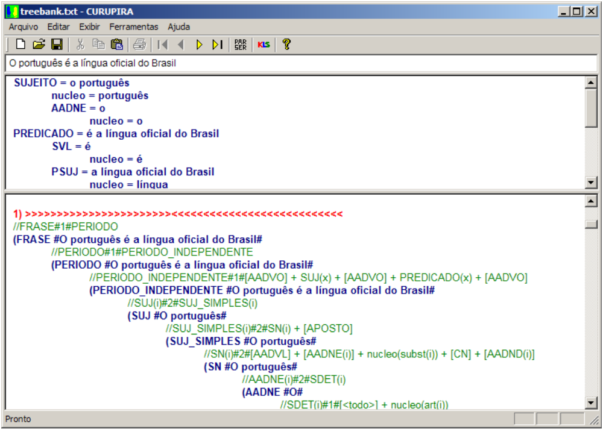
Fonte: (Martins et al., 2003)
Donatus é um projeto que consiste em ferramentas e gramáticas baseadas em Python e na biblioteca NLTK19 para análise profunda e anotação sintática de corpora do português brasileiro. Inclui uma interface gráfica, conforme pode ser visto na Figura 7.5. Está disponível em repositório público, sob licença GNU General Public License version 3.0 (GPLv3).
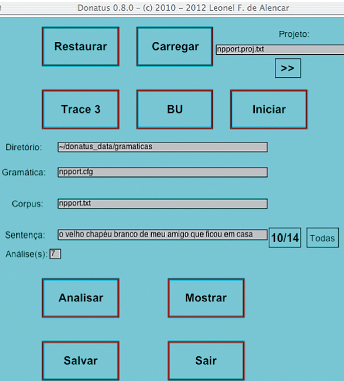
Fonte: (Alencar, 2012)
PassPort é uma ferramenta para análise de dependências de português treinado com o Stanford Parser, utilizando o corpus Portuguese Universal Dependency (PT-UD). Infelizmente, a página do projeto não se encontra disponível na data de escrita deste capítulo.
7.3.2.2 Frameworks e Bibliotecas
Devido à popularidade de Python, muitas bibliotecas de PLN foram desenvolvidas na linguagem. Entre as bibliotecas que incluem parsing para língua portuguesa, podemos citar spaCy20, Stanza21 e NLTK.
spaCy é uma biblioteca PLN que oferece análise linguística eficiente e rápida para várias línguas, incluindo o português. Inclui recursos para tokenização, marcação de parte do discurso (PoS tagging), reconhecimento de entidades nomeadas, análise sintática e outros. Através de modelos pré-treinados, o spaCy é capaz de fornecer análises detalhadas, permitindo a extração de informações semânticas de um texto em língua portuguesa.
Stanza22 é outra biblioteca PLN que suporta vários idiomas, incluindo o português, desenvolvida pela Universidade Stanford. Fornece uma gama de recursos semelhantes ao spaCy, com suporte a análises mais profundas, como a análise de dependência neural.
NLTK (Natural Language Toolkit) também é uma biblioteca em Python que oferece suporte para tarefas de PLN em língua portuguesa, como a análise sintática. NLTK permite o parse usando expressões regulares (com Regexp Parser), análise de dependência com analisador de dependência probabilístico e análise de dependência com analisador de Stanford.
É importante mencionar que, além de Python, outras linguagens de programação também oferecem bibliotecas e frameworks para análise sintática.
7.3.2.3 Ferramentas online
A seguir apresentaremos algumas das ferramentas web disponíveis para parsing de texto em português, permitindo executar a análise sintática e obter como saída arquivos com distintos formatos, incluindo a visualização das árvores sintáticas. Todas as ferramentas apresentadas são de acesso livre e gratuito.
O Portparser
O Portparser (Lopes; Pardo, 2024) é um modelo de parsing para o português brasileiro que se alinha à iniciativa de Universal Dependencies (UD), tendo sido desenvolvido no contexto do projeto POeTiSA (POrtuguese processing - Towards Syntactic Analysis and parsing) 23. O modelo foi treinado com o subcorpus jornalístico Porttinari-base (Duran et al., 2023) do treebank Porttinari (Pardo et al., 2021). O Portparser faz anotação de Part-of-Speech (PoS), identificação de lemas, extração de características morfológicas e anotação de relações de dependência.
O desempenho para o português é de 99% de precisão para anotação de PoS, lema e atributos morfológicos, enquanto a precisão para a anotação de dependências supera 95% de LAS (Labeled Attachment Score), que é a métrica mais tradicional da tarefa de parsing (Nivre; Fang, 2017), sendo o estado da arte conhecido no momento para a língua portuguesa.
A ferramenta que permite o uso do Portparser está disponível online24. A Figura 7.6 apresenta a captura da tela de entrada do Portparser. O Portparser foi projetado para receber textos em português e executar segmentação sentencial, tokenização e as anotações do modelo citadas (PoS, lema, características morfológicas e relações de dependência).
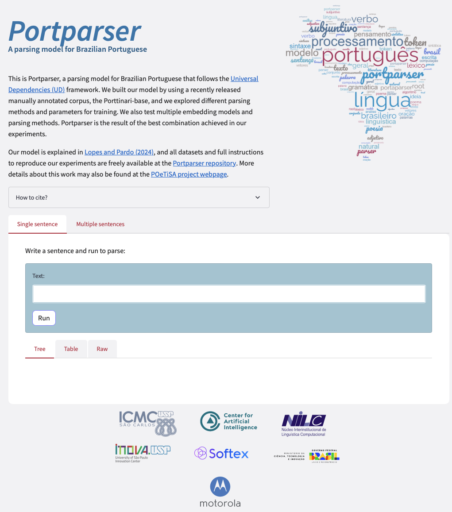
O Portparser aceita entrada de sentenças isoladas (Single sentence) ou upload de arquivo com diversas sentenças (Multiple sentences). No caso de entrada de um arquivo com diversas sentenças, o Portparser oferece a possibilidade de executar a segmentação sentencial do texto ou considerar que o texto já foi segmentado e possui uma sentença por linha.
O resultado da utilização do Portparser pode ser visto na Figura 7.7, onde a sentença “Gostei da variedade e da qualidade” foi anotada. A anotação produzida pode ser visualizada através da árvore de dependência (Tree), como na Figura 7.7, mas também por uma tabela com o conteúdo do arquivo CoNLL-U (Table) na Figura 7.8 ou como um texto puro com o arquivo CoNLL-U (Raw) na Figura 7.9.
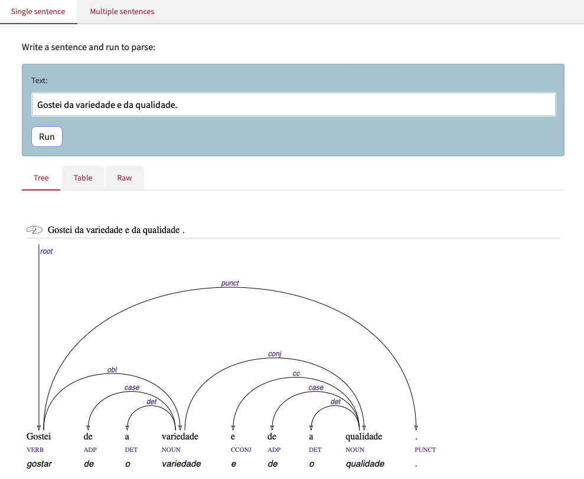
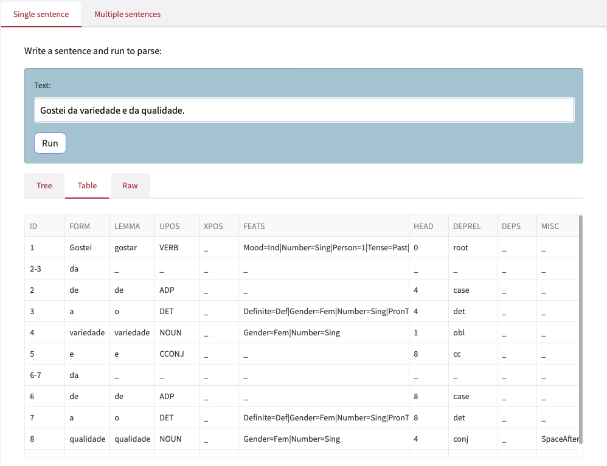
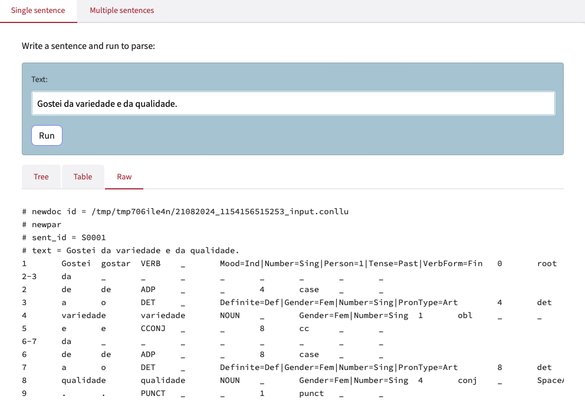
O Parser LX
O Parser LX, ferramenta integrante do PORTULAN CLARIN25, é parte integrante de um portal de acesso a infraestrutura de tecnologia linguística no escopo do projeto internacional CLARIN ERIC26.
O Parser LX é disponibilizado tanto para parsing de constituência27 como de dependência, este último em duas versões: LX-DepParser28 e LX-UDParser29
A interface é simples e amigável, tendo como entrada uma sentença que o usuário pode digitar em campo próprio ou um arquivo que deverá ser importado.
A Figura 7.10 mostra uma captura de tela da interface do Parser LX de constituência.
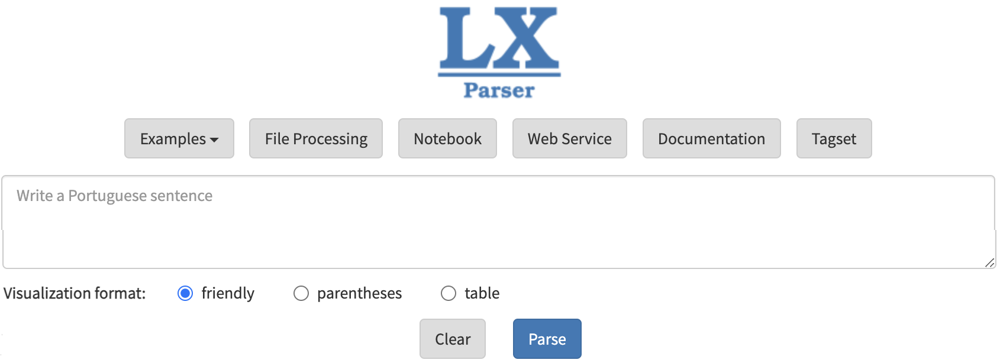
Como vemos na Figura 7.10, o parser tem como saída uma visualização na forma de árvore, denominada “amigável” (em inglês, friendly), ou uma representação parentética ou entre parênteses/colchetes ou ainda uma representação na forma tabular.
Para a sentença “Emma Watson postou uma foto com Daniel Radcliffe”, o parser gera a árvore de constituência apresentada na Figura 7.11
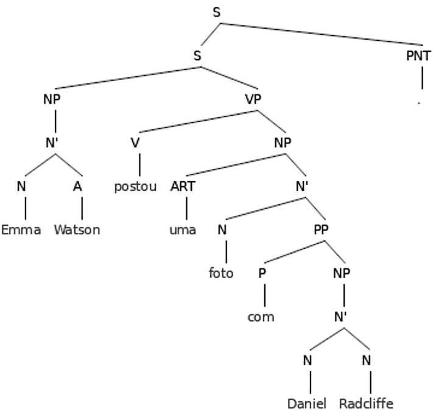
No que diz respeito à sintaxe de dependência, LX possui duas versões, sendo uma delas adaptada ao formato Universal Dependencies, apresentado no Capítulo A ordem e a função das palavras em uma sentença.
A Figura 7.12 mostra uma captura de tela da interface do Parser LX de dependência no formato UD.
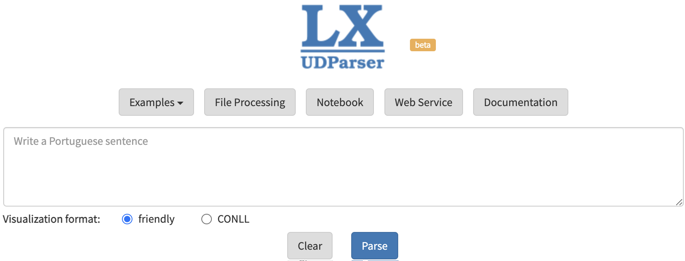
Como a tela mostra, a saída do parser pode ser na forma de visualização com setas, denominada “amigável” ou no formato CoNLL-U, que é um formato próprio para parsing de dependência, como vimos no Capítulo A ordem e a função das palavras em uma sentença.
Para a sentença “Emma Watson postou uma foto com Daniel Radcliffe”, o parser gera a árvore de constituência apresentada na Figura 7.13.
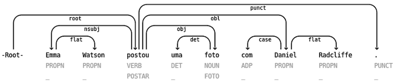
O Parser VISL30
O projeto VISL (do inglês, Visual Interactive Syntax Learning) é desenvolvido pelo Institute of Language and Communication (ISK) da University of Southern Denmark. O projeto disponibiliza recursos (corpora) e ferramentas, tais como parsers de constituência e dependência. A análise se baseia no parser PALAVRAS (Bick, 2000) e no corpus Floresta Sintá(c)tica.
Para a sentença “Emma Watson postou uma foto com Daniel Radcliffe”, o parser gera a árvore de constituência apresentada na Figura 7.14.
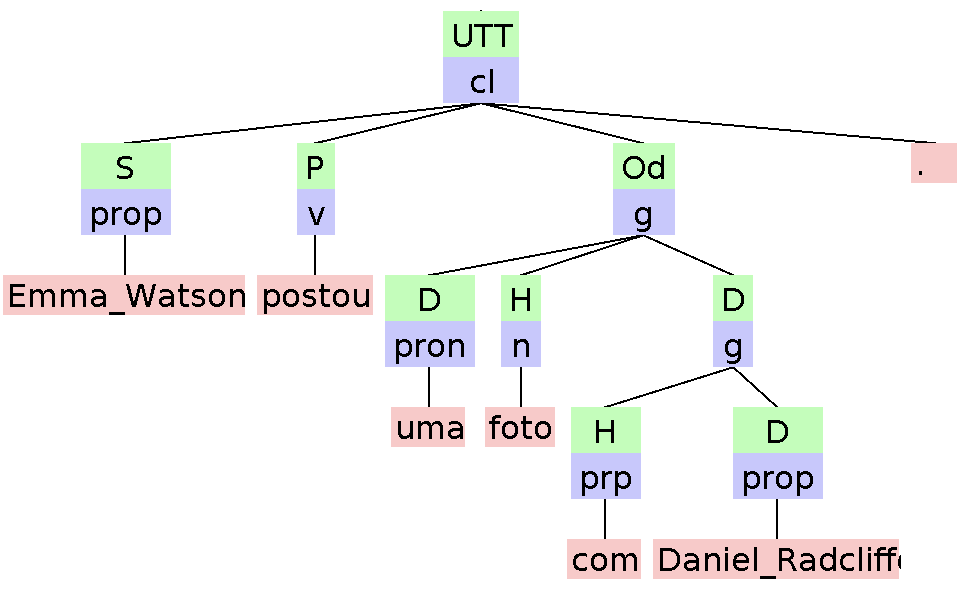
O UDPipe
UDPipe é um conjunto de ferramentas (toolkit) e um serviço web que possibilita processar texto por meio de uma pipeline que inclui tokenização em palavras, etiquetagem de classe de palavra (PoS), lematização, e parsing de dependência. É desenvolvido pelo Institute of Formal and Applied Linguistics da Faculty of Mathematics and Physics da Charles University (República Tcheca). O padrão adotado é das Universal Dependencies e conta com modelos treinados para a maioria dos treebanks já anotados no formato UD. Além da interface web, altamente eficiente e amigável, é possível processar texto por meio de um script em Python.
A Figura 7.15 mostra uma captura de tela da interface web do UDPipe, com a seleção do modelo Bosque para a língua portuguesa.
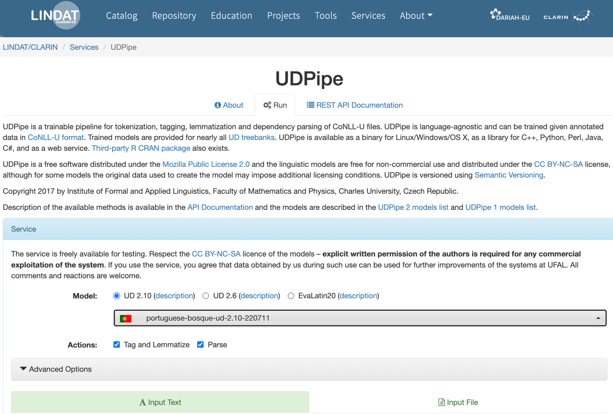
A entrada pode ser texto digitado em um campo próprio ou um arquivo de texto e há três formatos de saída: diagrama arbóreo, formato CoNLL-U e formato tabular.
Para a sentença “Emma Watson postou uma foto com Daniel Radcliffe”, o parser gera a árvore de dependência apresentada na Figura 7.16.
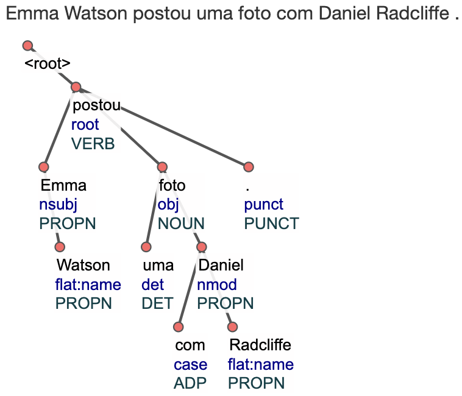
7.4 Visualização, anotação e edição de treebanks
Há diversas ferramentas que permitem tanto a visualização de árvores de constituência e dependência, como a anotação de sentenças e a edição de sentenças já anotadas manualmente ou automaticamente.
7.4.1 Árvores de constituência
Há ferramentas web que oferecem uma visualização gráfica de diagrama de árvores a partir da notação entre colchetes ou parênteses dada como entrada pelo usuário.
Uma dessas ferramentas é Syntax Tree Generator (Syntree)31, a qual dada uma entrada com notação em colchetes, gera um diagrama de árvore como mostrado na Figura 7.17.
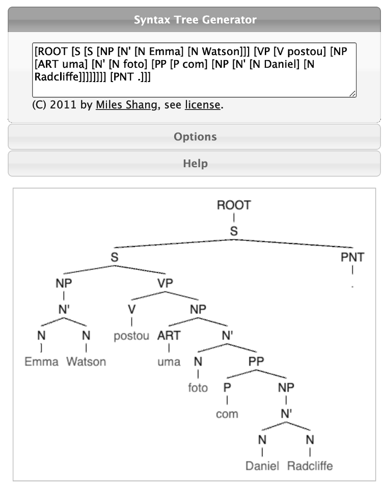
Ferramentas semelhantes à Syntax Tree Generator são:
7.4.2 Árvores de dependência
7.4.2.1 Visualização de sentenças anotadas
Há ferramentas web que oferecem uma visualização gráfica de diagrama de árvores a partir do arquivo em formato CoNLL-U dado como entrada pelo usuário. Por exemplo, a ferramenta Grew Web possibilita carregar um arquivo CoNLL-U e visualizar o diagrama de relações de dependência, como mostrado na Figura 7.18.
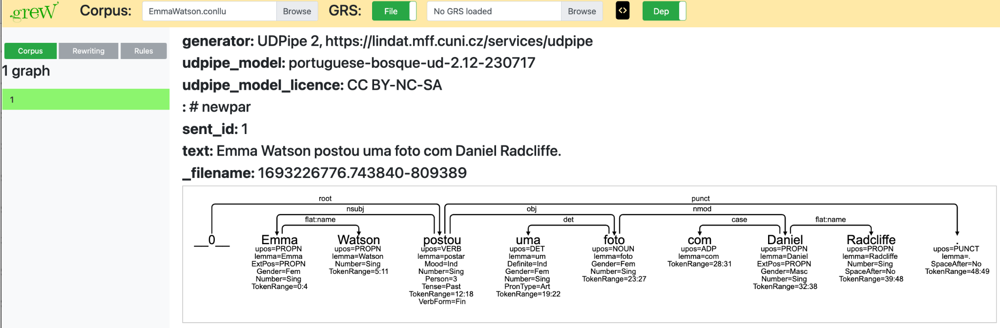
Uma ferramenta semelhante à Grew Web é CoNLL-U Viewer.34
7.4.2.2 Buscas em treebanks
Há ferramentas web de busca em treebanks anotados com relações de dependência. Esse é o caso da ferramenta Grew Match, que possibilita o acesso a 245 treebanks e distintos tipos de busca (por exemplo: por palavra, lema, etiqueta de PoS, etiqueta de relação de dependência, ngramas de palavras, lemas e PoS etc.). A Figura 7.19 mostra uma captura de tela com os resultados de uma busca pela palavra “foto” no treebank de dissertações e teses em português brasileiro no domínio do petróleo Petrogold.
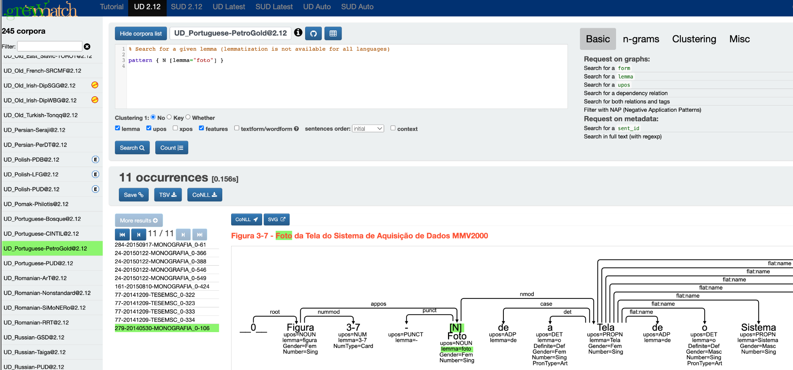
Uma ferramenta semelhante à Grew Match é TüNDRA (Tübingen aNnotated Data Retrieval Application).35
7.4.2.3 Anotação e edição manual de relações de dependência
Para editar arquivos CoNLL-U previamente anotados de forma manual ou automática, uma das ferramentas mais utilizadas é ArboratorGrew36, que possui uma versão customizada no Brasil pela equipe do ICMC da USP: Arborator-Grew-NILC37. Essa ferramenta permite gerenciar projetos individuais e coletivos de anotação, bem como serve de plataforma instrucional para cursos e treinamentos em anotação de sintaxe de dependência. A Figura 7.20 mostra a interface da ferramenta no momento de edição de uma das etiquetas de PoS.
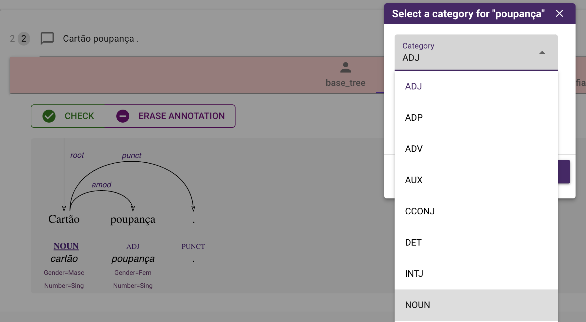
A ferramenta Arborator Grew recebe como entrada arquivos CoNLL-U e possibilita a exportação dos arquivos CoNLL-U editados, bem como das imagens dos diagramas de dependência.
Há muitas outras ferramentas de visualização, consulta, anotação e edição de sintaxe de dependência. Nos últimos anos, o projeto Universal Dependencies vem a atualizando a lista de ferramentas disponíveis, a qual pode ser consultada no site do projeto38.
7.4.3 Anotação de corpus em múltiplos níveis
Há ferramentas que permitem a anotação de sintaxe juntamente com a anotação em outros níveis, como é o caso de entidades nomeadas, relações entre entidades, correferência e outras. Uma das ferramentas mais robustas disponíveis atualmente e com interface amigável e INCEpTION39, desenvolvida pelo Ubiquitous Knowledge Processing (UKP) Lab do Department of Computer Science da Technische Universität Darmstadt (Klie et al., 2018).
INCEpTION é apresentada como um ambiente computacional e plataforma de anotação semântica. É uma aplicação web que permite que vários anotadores trabalhem num mesmo projeto, sendo que a instalação é feita na máquina local do anotador, que utiliza a ferramenta por meio de um arquivo executável java e um localhost. Possui esquemas prontos de anotação de PoS e relações de dependência e permite anotar várias sentenças e as relações de correferência e outras relações entre elas, como ilustrado na Figura 7.21.
A Figura 7.21 mostra uma captura de tela com anotação em múltiplos níveis na ferramenta.
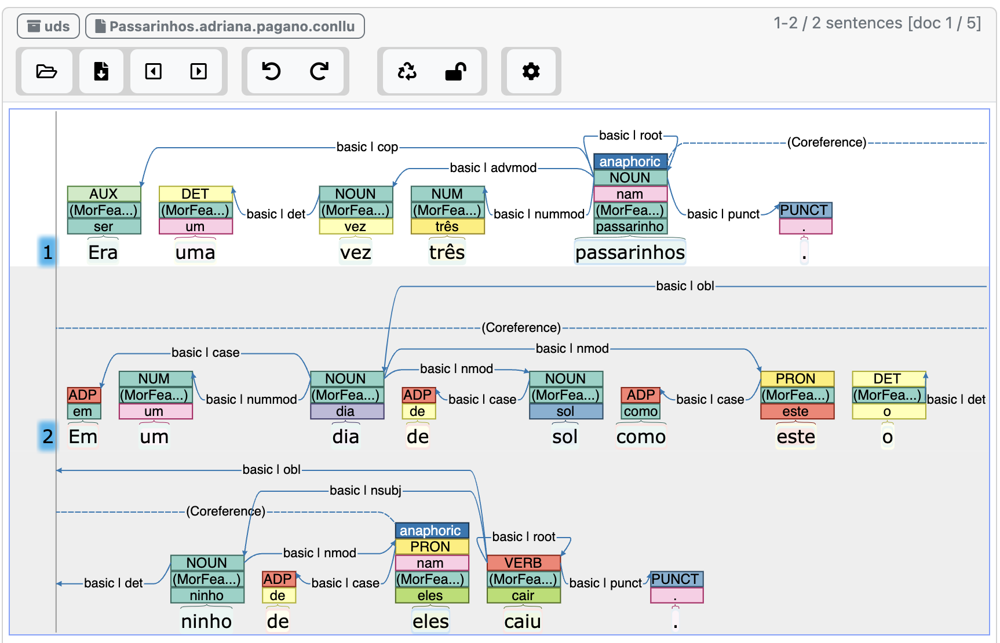
7.5 Considerações finais
No cenário de PLN, a análise sintática desempenha um papel importante na compreensão e interpretação de textos. Como vimos, várias bibliotecas e ferramentas foram propostas para trabalhar com a língua portuguesa, oferecendo soluções para a análise sintática de sentenças. A interseção entre linguística computacional e programação torna a análise sintática acessível mesmo para aqueles que não são especialistas em PLN, abrindo portas para uma compreensão mais profunda dos textos em língua portuguesa e sua estrutura intrínseca.
https://universaldependencies.org/treebanks/pt_bosque/index.html↩︎
https://universaldependencies.org/treebanks/pt_cintil/index.html↩︎
https://universaldependencies.org/treebanks/pt_petrogold/index.html↩︎
https://sites.google.com/icmc.usp.br/poetisa/resources-and-tools↩︎
Mac-Morpho: http://www.nilc.icmc.usp.br/macmorpho/↩︎
Brazilian Stock Market Tweets with Emotions|Kaggle: https://www.kaggle.com/datasets/fernandojvdasilva/stock-tweets-ptbr-emotions↩︎
Corpus Porttinari: https://sites.google.com/icmc.usp.br/poetisa/porttinari ↩︎
PassPort (A Dependency Parsing Model for Portuguese | SpringerLink): https://link.springer.com/chapter/10.1007/978-3-319-99722-3_48↩︎
No entanto, vale ressaltar que o projeto foi desenvolvido em 2002 - 2004, de acordo com o site, e pode não estar mais disponível para ser obtido.↩︎
NLTK :: Natural Language Toolkit https://www.nltk.org↩︎
Cabe esclarecer que embora o Stanford forneça um modelo treinado para língua portuguesa, que pode ser utilizado pelas bibliotecas Python, na interface online deste projeto não há suporte para o idioma português.↩︎